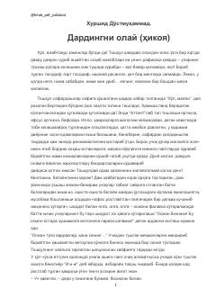

DOToshqulning o‘zga yurtga safari va u yerdagi hayratlanarli sarguzashtlari haqidagi hikoya.
Taniqli yozuvchi Xurshid Do‘stmuhammadning ushbu hikoyasida Toshqul ismli insonning o‘ o‘zga yurtga qilgan safari va u yerdagi turli kutilmagan voqealar haqida hikoya qilinadi. Asar insoniylik, g‘urur va zamon ziddiyatlarini o‘tkir badiiy tilda ochib beradi.